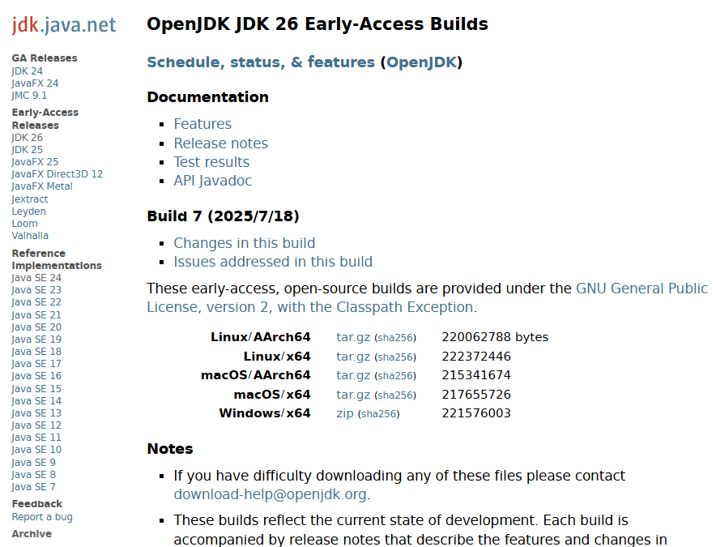
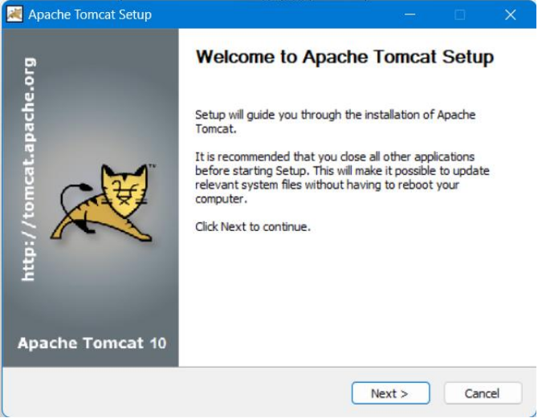
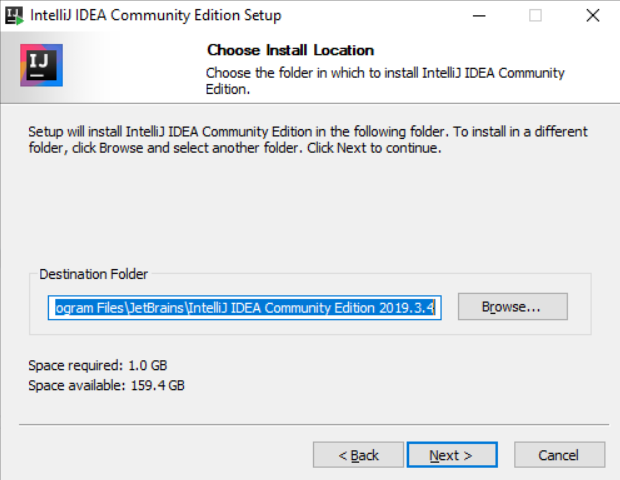
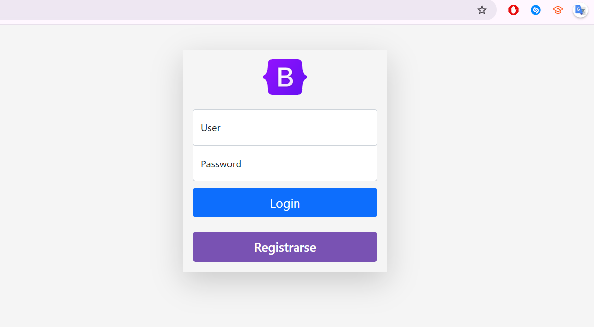

Apache Tomcat
Apache Tomcat es un servidor open-source que implementa las especificaciones Java Servlet, JavaServer Pages (JSP), y otras tecnologías web de Java. Es ampliamente usado por su ligereza, rendimiento y flexibilidad.
- bin: ejecutables para iniciar o detener el servidor
- conf: configuración de puertos, hilos, usuarios, contextos
- webapps: carpeta donde se despliegan nuestras apps (.war o carpetas)
- logs: registro de errores y eventos del servidor
El archivo server.xml es el corazón de la configuración, definiendo puertos (como el 8080), seguridad, y contextos.
Maven
Maven es un sistema de gestión de proyectos que simplifica la compilación, documentación y despliegue. Su archivo pom.xml centraliza la configuración del proyecto, dependencias, versiones y plugins.
<project>
<groupId>com.example</groupId>
<artifactId>miApp</artifactId>
<version>1.0-SNAPSHOT</version>
</project>
Se utilizó el plugin tomcat7-maven-plugin para desplegar directamente en Tomcat desde Maven.
Java Server Pages (JSP)
JSP permite incrustar código Java en HTML para generar páginas dinámicas. En el backend, el servidor convierte cada archivo JSP en un servlet.
- Scriptlets: <% código Java %>
- Directivas: para importar clases, incluir archivos, y definir características de la página
- Expresiones: <%= expresión Java %> se imprime directamente
También se trabajó con los objetos implícitos: request, session, response, out, entre otros.
Spring Framework y Spring Boot
Spring es un framework ligero para desarrollar aplicaciones Java empresariales. Proporciona una infraestructura robusta para inyección de dependencias, configuración, seguridad y más.
- Inversión de Control (IoC): el framework gestiona la creación de objetos.
- Beans: objetos gestionados por Spring.
- Spring Boot: permite crear apps listas para producción sin configuración extensa.
Se revisó cómo crear una aplicación básica con Spring y cómo definir Beans en XML.
Imágenes del Proceso de Instalación
A continuación, algunas capturas de pantalla que muestran el proceso de instalación y configuración del entorno de desarrollo:




¿Qué aprendí?
Aprendí a configurar un entorno Java profesional, entendí cómo funciona un servidor servlet como Tomcat, y cómo desplegar aplicaciones usando Maven. También di mis primeros pasos con JSP y conocí la estructura del framework Spring.
¿Cómo aprendí?
A través de clases guiadas, tareas prácticas como instalar Java y Tomcat, crear y ejecutar páginas JSP, así como experimentación propia dentro de IntelliJ IDEA. La retroalimentación en clase también fue clave para entender el ciclo completo de despliegue.